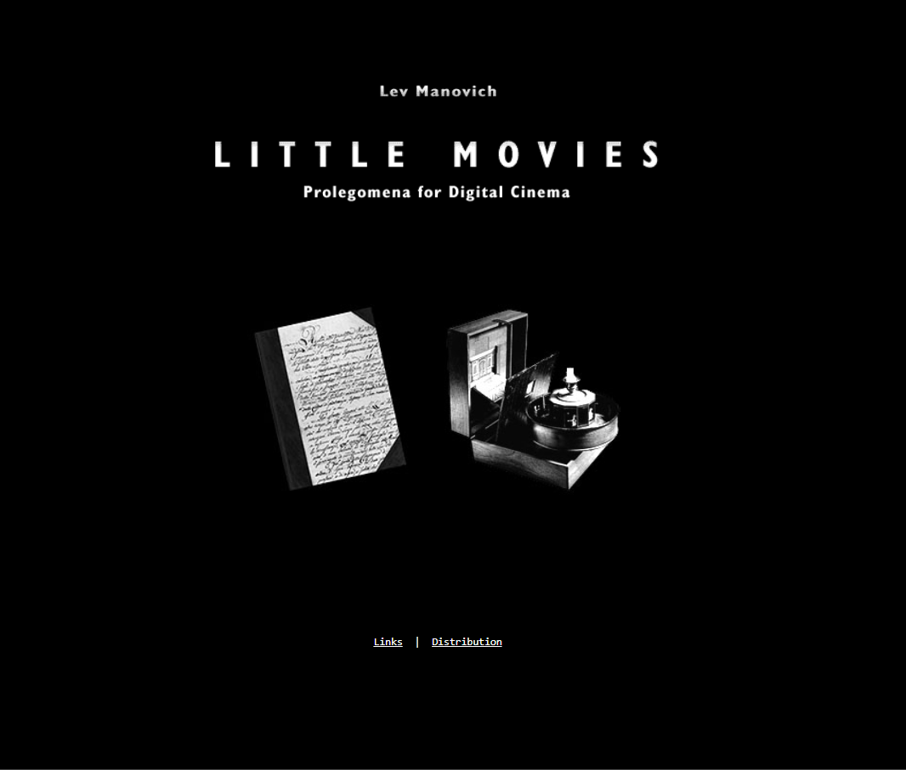

Lev Manovich

Bio
Little Movies is a conceptual digital art project by Lev Manovich that explores the aesthetic possibilities of early web-based cinema. Created in 1994, a time when the internet was rapidly evolving, the project treats technical limitations such as low resolution and small file sizes as creative opportunities. Designed as "cinema for the Web", it experiments with minimal visuals, looping sequences, and compressed storytelling. Influenced by early QuickTime formats, “Little Movies” serves as both an art piece and a reflection on the origins of digital media. The site also includes links to articles dedicated to media analysis and history.
Key characteristics of the artist's work
Little Movies is shaped by its use of different media formats and its focus on working within technical limits. The project appears across various formats, each changing how the movies look and feel. Early versions use tiny QuickTime windows with lots of empty screen space, while later versions explore larger, clearer images. Efforts to reduce file size for faster downloading lead to changes in the structure of the movies, resulting in different versions across formats. Overall, the project is closely tied to the technology used to demonstrate it.